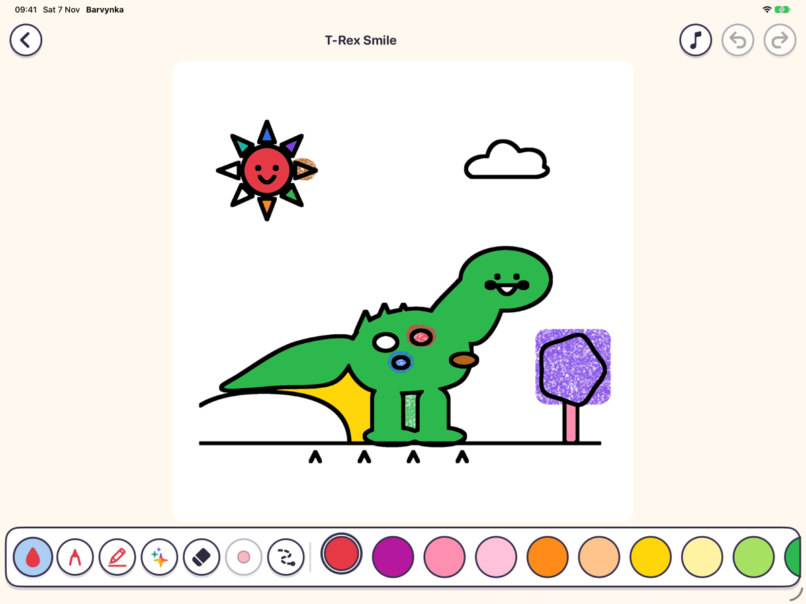

Apple Pencil
Crayons that feel real
Pencil crayon with paper grain, pressure and tilt shading, plus marker, glitter and eraser in three sizes. Fingers work too, and tap-to-fill never leaks through outlines.
iPad app for kids
A calm, private coloring app for young children, made for iPad and Apple Pencil. No accounts, no ads, no internet needed.

Apple Pencil
Pencil crayon with paper grain, pressure and tilt shading, plus marker, glitter and eraser in three sizes. Fingers work too, and tap-to-fill never leaks through outlines.
Pages
Dinos, castles, princesses and cars, single letters A to Z and digits, plus an ABC and a 0 to 9 chart.
Rewards
Finish a page to earn a sticker, with confetti and Dini the dino cheering you on.
Photos
Turn any photo into a coloring page, right on the device. Grown-ups only, behind a parental gate.
Privacy
No accounts, ads, analytics or third-party SDKs. Drawings and profiles stay on the iPad.
Grown-ups
A grown-up gate guards settings and deleting. A drawing-time limit (15 minutes by default) ends with a gentle break screen.
Support
Write to dev.honcharov@gmail.com. I usually reply within a few days.